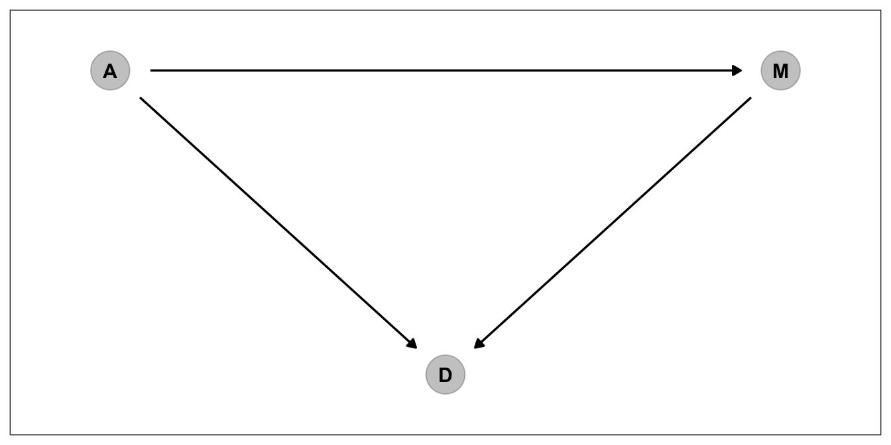
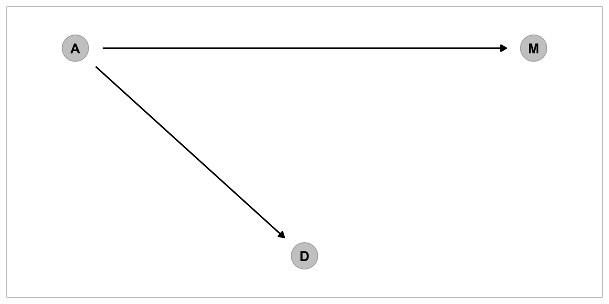
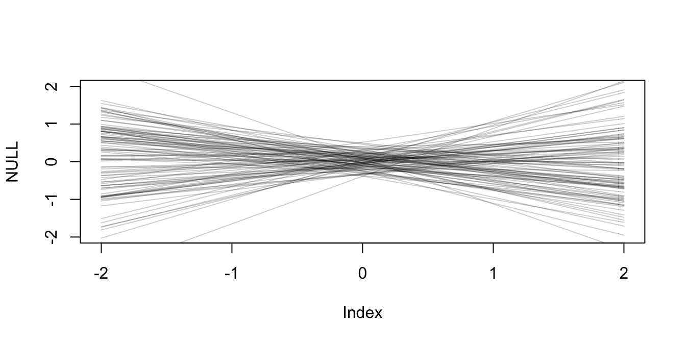

Chapter 2 The Many Variables & The Spurious Waffles
\[\newcommand{\ci}{\perp\!\!\!\perp}\]
library(rethinking)
library(dplyr)
library(rstan)
library(brms)
library(ggplot2)
library(tidybayes)
library(tidyverse)
library(patchwork)
library(brms)
library(dagitty)
library(ggdag)2.1 Spurious Association
In the first section of this chapter we are going to deal with the milk data. Let’s load it and apply desired tranformations on it.
#load data and copy
data(WaffleDivorce)
d <- WaffleDivorceAs data contained missing values, we decided to use only the cases for our three variables. After we make sure that there’s nothing missing. Let’s move on with standardization
#standardise the variables
d$A <- ( d$MedianAgeMarriage - mean(d$MedianAgeMarriage) ) / sd(d$MedianAgeMarriage)
d$M <- ( d$Marriage - mean(d$Marriage) ) / sd(d$Marriage)
d$D <- (d$Divorce - mean (d$Divorce) ) / sd(d$Divorce)In the book McElrath used scale function but I wanted to do it manually. Basicall standardization is:
\[ z_i = \frac{ X_i - \bar{X}} {sd(X)} \]
resulting is the standardized vector
Before doing anything with our standardized variables let’s fit those two models in McElreath’s double plot
First model is
\[\ \ \ \ \ \ \ \ D_i \sim \mathrm{Normal}(\mu_i, \sigma) \\ \mu_i = \alpha + \beta_{A} A_i \\ \ \ \ \ \ \ \ \ \alpha \sim \mathrm{Normal(0, 0.2)} \\ \ \ \ \ \ \ \ \ \beta \sim \mathrm{Normal(0, 0.5)} \\ \ \ \ \ \ \ \ \ \ \sigma \sim \mathrm{Exponential(1)}\]
Stan data for the right handside plot
dat_5_1_a <- list(N=NROW(d),
X = d$A,
D = d$D)data {
int<lower=0> N;
vector[N] X;
vector[N] D;
}
parameters {
real alpha;
real beta;
real<lower=0> sigma;
}
transformed parameters{
vector[N] mu = alpha + beta * X;
}
model {
D ~ normal(mu, sigma);
alpha ~ normal(0, 0.2);
beta ~ normal(0, 0.5);
sigma ~ exponential(1);
}
#Sampling
fit_5_1_a <- sampling(double_plot_model.stan, dat_5_1_a,
iter=1000,
chains=2,
cores=4)d_right_plot <-
fit_5_1_a %>%
gather_draws(mu[i]) %>%
mean_qi() %>%
rename(mu = .value,
lower = .lower,
upper = .upper)
d_right_plot$D <- scale(d$Divorce)
d_right_plot$A <- scale(d$MedianAgeMarriage)
# Aesthetics X
rescale_x <- seq(-2, 2, by=1)
x_labels <- rescale_x * sd(d$MedianAgeMarriage) + mean(d$MedianAgeMarriage)
# Aesthetics Y
rescale_y <- seq(-2, 2, by=1)
y_labels <- rescale_x * sd(d$Divorce) + mean(d$Divorce)
ggplot(d_right_plot) +
geom_point(aes(x=A , y=D)) +
geom_ribbon(aes(x = A, ymin=lower, ymax=upper), alpha=0.5) +
geom_line(aes(x=A , y=mu),size=2) +
scale_x_continuous(breaks = rescale_x,
labels = round(x_labels, 0)) +
scale_y_continuous(breaks = rescale_y,
labels = round(y_labels, 0)) +
xlab("Median Age at Marriage") +
ylab("Divorce Rate")
And second Model
\[\ \ \ \ \ \ \ \ D_i \sim \mathrm{Normal}(\mu_i, \sigma) \\ \mu_i = \alpha + \beta_{M} M_i \\ \ \ \ \ \ \ \ \ \alpha \sim \mathrm{Normal(0, 0.2)} \\ \ \ \ \ \ \ \ \ \beta \sim \mathrm{Normal(0, 0.5)} \\ \ \ \ \ \ \ \ \ \ \sigma \sim \mathrm{Exponential(1)}\]
Stan data for the right handside plot
dat_5_1_b <- list(N=NROW(d),
X = d$M,
D = d$D)Notice we are using same model with different data
#Sampling
fit_5_1_b <- sampling(double_plot_model.stan,
dat_5_1_b,
iter=1000,
chains=2,
cores=4)d_left_plot <-
fit_5_1_b %>%
gather_draws(mu[i]) %>%
mean_qi() %>%
rename(mu = .value,
lower = .lower,
upper = .upper)
d_left_plot$D <- scale(d$Divorce)
d_left_plot$M <- scale(d$Marriage)
# Aesthetics X
rescale_x <- seq(-2, 2, by=1)
x_labels <- rescale_x * sd(d$Marriage) + mean(d$Marriage)
ggplot(d_left_plot) +
geom_point(aes(x=M , y=D)) +
geom_ribbon(aes(x = M, ymin=lower, ymax=upper), alpha=0.5) +
geom_line(aes(x=M , y=mu),size=2) +
scale_x_continuous(breaks = rescale_x,
labels = round(x_labels, 0)) +
scale_y_continuous(breaks = rescale_y,
labels = round(y_labels, 0)) +
xlab("Marriage Rate") +
ylab("Divorce Rate")
Yes we did the modelling but how about the priors? What do we know about them? Just like the last chapter, let’s use simulations to see what they tell us about our model before any data.
prior_alpha <- rnorm(100, 0, 0.2)
prior_beta <- rnorm(100, -0.25, 0.25)
prior_sigma <- rexp(100, 2)
#plot them
plot(NULL, xlim=range(d$A), ylim = range(d$D), xlab = "Median age of marriage", ylab = "Divorce Rate")
mtext( "constructed slopes for beta ~ dnorm(-0.25, 0.25)" ) # label
x <- 1 # constant
xbar <- 1 # constant mean
N <- 100 # number of observations
for (i in 1:N ) curve(prior_alpha[i] + prior_beta[i]*x,
from = min(d$A), to=max(d$D), add = TRUE,
col = col.alpha("black", 0.4))They are in fact reasonable priors. But is setting reasonable priors and writing down good stan code is enough for making causal claims? No! As the McElreath spends decent amount of time explaining why in chapters 5 and 6 of the book, causal inference is something different. First let’s draw some DAGS to see how we conceptualize the relationships among our variables
dag_coords <-
tibble(name = c("A", "M", "D"),
x = c(1, 3, 2),
y = c(2, 2, 1))
dag_1 <-
dagify(M ~ A,
D ~ A + M,
coords = dag_coords)
p_dag_1 <-
dag_1%>%
ggplot(aes(x = x, y = y, xend = xend, yend = yend)) +
geom_dag_point(color = "black", alpha = 1/4, size = 10) +
geom_dag_text(color = "black") +
geom_dag_edges(edge_color = "black") +
scale_x_continuous(NULL, breaks = NULL, expand = c(.1, .1)) +
scale_y_continuous(NULL, breaks = NULL, expand = c(.1, .1)) +
theme_bw() +
theme(panel.grid = element_blank())
p_dag_1
The dag above corresponds to 3 assumptions
1. A directly influences M
2. A directly influences D
3. M directly influences D
4. A indirectly influences D over MThis is one way to depict a causal model. But we don’t have one causal explanation mechanism for this data. Think about for a while. Do you really think Marriage rate has direct influence on Divorce, or median age at marriage as being common cause of both marriage rate and Divorce, creates a spurious correlation between marriage rate and divorce? Let’s depict that one and try to find ways to answer this question.
dag_2 <-
dagify(M ~ A,
D ~ A,
coords = dag_coords)
p_dag_2 <- dag_2%>%
ggplot(aes(x = x, y = y, xend = xend, yend = yend)) +
geom_dag_point(color = "black", alpha = 1/4, size = 10) +
geom_dag_text(color = "black") +
geom_dag_edges(edge_color = "black") +
scale_x_continuous(NULL, breaks = NULL, expand = c(.1, .1)) +
scale_y_continuous(NULL, breaks = NULL, expand = c(.1, .1)) +
theme_bw() +
theme(panel.grid = element_blank())
p_dag_2
For that one we have to check conditional independencies that each DAG assumes. First DAG has no conditional independency. However, second DAG says M should be conditionally independent of D. \(D \ci \mathrm{M | D}\) in formal notation.
print(impliedConditionalIndependencies(dag_1))Let’s use dagity for both dags
impliedConditionalIndependencies(dag_2)## D _||_ M | ALet’s try to summarize. The testable implications of the first DAG are that all pairs of vari- ables >should be associated, whatever we condition on. The testable implications of the second DAG are that all pairs of variables should be associated, before conditioning on anything, but that D >and M should be independent after conditioning on A. So the only implication that differs between >these DAGs is the last one: D ⊥ M|A.
In order to test this we need a statistical model. Here we build it. First the stan data
dat_multiple <- list(N=NROW(d),
A = d$A,
M = d$M,
D = d$D)Stan model is going to be really similar to polynomial models. The only difference will be that we are not going to use the same variable again and again. Rather, our \(\beta\)s will be associated with differen variables.
Contrary to previous models we created, this time I will write an additional block which draws the predictions from the posterior.
data{
int<lower=1> N;
vector[N] A;
vector[N] M;
vector[N] D;
}
parameters{
real alpha;
real beta_A;
real beta_M;
real<lower=0> sigma;
}
transformed parameters{
vector[N] mu = alpha + beta_A * A + beta_M * M;
}
model{
D ~ normal(mu, sigma);
alpha ~ normal(0, 0.2);
beta_M ~ normal(0, 0.5);
beta_M ~ normal(0, 0.5);
sigma ~ exponential(1);
}
generated quantities{
vector[N] yhat;
for (i in 1:N) yhat[i] = normal_rng(mu[i], sigma);
}
The generated quantities block is designed for that purpose. Once you have the model, you can make stan all the manual work do for you.
Basically what we told the Golem is, “hey, please create a vector of size N. For each row ranging from 1 to N, simulate from a normal distribution. In order to simulate from normal distribution you’ll naturally need a mean and standard deviation. Take each row of mu as mean and use sigma and standard deviation”
#Sampling
fit_multiple <- sampling(model_multiple.stan,
dat_multiple,
iter=1000,
chains=2,
cores=4)Coefficient for A in single predictor model
print(fit_5_1_a, pars="beta")## Inference for Stan model: stan-1982640c4519.
## 2 chains, each with iter=1000; warmup=500; thin=1;
## post-warmup draws per chain=500, total post-warmup draws=1000.
##
## mean se_mean sd 2.5% 25% 50% 75% 97.5% n_eff Rhat
## beta -0.56 0 0.11 -0.78 -0.64 -0.56 -0.49 -0.34 1027 1
##
## Samples were drawn using NUTS(diag_e) at Sat Jul 17 13:47:56 2021.
## For each parameter, n_eff is a crude measure of effective sample size,
## and Rhat is the potential scale reduction factor on split chains (at
## convergence, Rhat=1).coefficient for M in single predictor model
print(fit_5_1_b, pars="beta")## Inference for Stan model: stan-1982640c4519.
## 2 chains, each with iter=1000; warmup=500; thin=1;
## post-warmup draws per chain=500, total post-warmup draws=1000.
##
## mean se_mean sd 2.5% 25% 50% 75% 97.5% n_eff Rhat
## beta 0.35 0 0.13 0.09 0.26 0.35 0.44 0.58 801 1
##
## Samples were drawn using NUTS(diag_e) at Sat Jul 17 13:48:01 2021.
## For each parameter, n_eff is a crude measure of effective sample size,
## and Rhat is the potential scale reduction factor on split chains (at
## convergence, Rhat=1).print(fit_multiple, pars=c("beta_A", "beta_M"))## Inference for Stan model: stan-1982d2a88ab.
## 2 chains, each with iter=1000; warmup=500; thin=1;
## post-warmup draws per chain=500, total post-warmup draws=1000.
##
## mean se_mean sd 2.5% 25% 50% 75% 97.5% n_eff Rhat
## beta_A -0.67 0.01 0.17 -1.00 -0.77 -0.66 -0.55 -0.36 629 1
## beta_M -0.10 0.01 0.15 -0.42 -0.20 -0.10 0.00 0.18 575 1
##
## Samples were drawn using NUTS(diag_e) at Sat Jul 17 13:48:07 2021.
## For each parameter, n_eff is a crude measure of effective sample size,
## and Rhat is the potential scale reduction factor on split chains (at
## convergence, Rhat=1).Look how coefficient for M wildy reduced. More importantly the credible interval is containing the zero now. So, the testable implication of the second was confirmed. Since the first one didn’t have this implication, it’s out.
In the section where McElreath shows us how to dig deeper the multivariate posterior, he also spent time on predictor residual plots. Here I will skip that. Maybe I’ll add it when I am done with this project. For the time being I will only do posterior predictions and counterfactual plots
2.1.1 Posterior Prediction Plots
p_dat_mult <-
fit_multiple%>%
gather_draws(mu[i]) %>%
mean_qi() %>%
rename(mu = .value)
yhat <-
fit_multiple%>%gather_draws(yhat[i]) %>%
mean_qi() %>%
rename(yhat = .value)
p_dat_mult$observed <- d$D
p_dat_mult$yhat <- yhat$yhat
ggplot(p_dat_mult, aes(x=observed, y=yhat,
ymin = .lower, ymax = .upper)) +
geom_point() +
geom_pointrange() +
geom_abline(intercept = 0, slope = 1, linetype = 'dashed') 2.1.2 Counterfactual Plots
Now we come to a specific point where we have to fit 2 models at the same time inside one stan file. First of all, is it possible? Well, if it’s possible for BRMS, then it should be possible for us too. For this task it’s not super necessary to learn from BRMS because this time the task is relatively easy. All we have to do is specifying parameters in a naming convention that when we are using them in different calculations, we should know which parameter is from which model. The rest is merging two models that we already fit.
However, since I want to encourage the readers to get the habit of learning from BRMS when in doubt, I will show you how BRMS constructs it.
let’s fit the brms model
Again, I quickly copy paste it from Solomon’s book.
d_model <- bf(D ~ 1 + A + M)
m_model <- bf(M ~ 1 + A)
#model
b5.3_A <-
brm(data = d,
family = gaussian,
d_model + m_model + set_rescor(FALSE),
prior = c(prior(normal(0, 0.2), class = Intercept, resp = D),
prior(normal(0, 0.5), class = b, resp = D),
prior(exponential(1), class = sigma, resp = D),
prior(normal(0, 0.2), class = Intercept, resp = M),
prior(normal(0, 0.5), class = b, resp = M),
prior(exponential(1), class = sigma, resp = M)),
iter = 2000, warmup = 1000, chains = 4, cores = 4,
seed = 5)print(stancode(b5.3_A))## // generated with brms 2.15.0
## functions {
## }
## data {
## int<lower=1> N; // total number of observations
## int<lower=1> N_D; // number of observations
## vector[N_D] Y_D; // response variable
## int<lower=1> K_D; // number of population-level effects
## matrix[N_D, K_D] X_D; // population-level design matrix
## int<lower=1> N_M; // number of observations
## vector[N_M] Y_M; // response variable
## int<lower=1> K_M; // number of population-level effects
## matrix[N_M, K_M] X_M; // population-level design matrix
## int prior_only; // should the likelihood be ignored?
## }
## transformed data {
## int Kc_D = K_D - 1;
## matrix[N_D, Kc_D] Xc_D; // centered version of X_D without an intercept
## vector[Kc_D] means_X_D; // column means of X_D before centering
## int Kc_M = K_M - 1;
## matrix[N_M, Kc_M] Xc_M; // centered version of X_M without an intercept
## vector[Kc_M] means_X_M; // column means of X_M before centering
## for (i in 2:K_D) {
## means_X_D[i - 1] = mean(X_D[, i]);
## Xc_D[, i - 1] = X_D[, i] - means_X_D[i - 1];
## }
## for (i in 2:K_M) {
## means_X_M[i - 1] = mean(X_M[, i]);
## Xc_M[, i - 1] = X_M[, i] - means_X_M[i - 1];
## }
## }
## parameters {
## vector[Kc_D] b_D; // population-level effects
## real Intercept_D; // temporary intercept for centered predictors
## real<lower=0> sigma_D; // residual SD
## vector[Kc_M] b_M; // population-level effects
## real Intercept_M; // temporary intercept for centered predictors
## real<lower=0> sigma_M; // residual SD
## }
## transformed parameters {
## }
## model {
## // likelihood including constants
## if (!prior_only) {
## target += normal_id_glm_lpdf(Y_D | Xc_D, Intercept_D, b_D, sigma_D);
## target += normal_id_glm_lpdf(Y_M | Xc_M, Intercept_M, b_M, sigma_M);
## }
## // priors including constants
## target += normal_lpdf(b_D | 0, 0.5);
## target += normal_lpdf(Intercept_D | 0, 0.2);
## target += exponential_lpdf(sigma_D | 1);
## target += normal_lpdf(b_M | 0, 0.5);
## target += normal_lpdf(Intercept_M | 0, 0.2);
## target += exponential_lpdf(sigma_M | 1);
## }
## generated quantities {
## // actual population-level intercept
## real b_D_Intercept = Intercept_D - dot_product(means_X_D, b_D);
## // actual population-level intercept
## real b_M_Intercept = Intercept_M - dot_product(means_X_M, b_M);
## }It’s long but pretty simple. If you look at the data block you can see that brms used compact notation. Solid way of declaring the data but not the only way. If you are already a person with advanced statistics literacy you may find it comfortable this way too. But for me, I prefer writing it explicitly.
What I want you to see whether is there something abnormal in the model and parameters block. Thankfully no, it’s just parameters piled up on top of each other. So, if this is the way to go, I believe we can continue with the simpler approach we have.
data {
int<lower=1> N;
vector[N] A;
vector[N] M;
vector[N] D;
}
parameters{
//First model
real alpha_model_1;
real beta_A_model_1;
real beta_M_model_1;
real<lower=0> sigma_model_1;
//betas
real alpha_model_2;
real beta_A_model_2;
real<lower=0> sigma_model_2;
}
transformed parameters {
// mu of first model
vector[N] mu_model_1 = alpha_model_1 + beta_A_model_1 * A + beta_M_model_1 * M;
// mu of second model
vector[N] mu_model_2 = alpha_model_2 + beta_A_model_2 * A;
}
model {
// modelling the response and setting priors for the params in the first model
D ~ normal(mu_model_1, sigma_model_1);
alpha_model_1~normal(0, 0.2);
beta_A_model_1 ~ normal(0, 0.5);
beta_M_model_1 ~ normal(0, 0.5);
sigma_model_1 ~ exponential(1);
// modelling the response and setting priors for the params in the second model
M ~normal(mu_model_2, sigma_model_2);
alpha_model_2 ~ normal(0, 0.2);
beta_A_model_2 ~ normal(0, 0.5);
}
generated quantities {
vector[N] yhat_model_1;
vector[N] yhat_model_2;
for (i in 1:N)
yhat_model_1[i] = normal_rng(mu_model_1[i], sigma_model_1);
for (i in 1:N)
yhat_model_2[i] = normal_rng(mu_model_2[i], sigma_model_2);
}
The generated quantities block above is completely unnecessary for the following example
fit_cf <- sampling(model_counterfactual.stan,
dat_multiple,
chains=2,
cores=4,
iter=1000)posterior_cf <- as.data.frame(fit_cf)
# new data for intervention
A_manipulated <- seq(from = -2, to = 2, length.out = 30)
# intervening A -> M
# function to simulate the mean
simulate_mu_A_M <- function(x) with(posterior_cf, alpha_model_2 + beta_A_model_2 *x)
# Function to simulate predictions
sim_prediction_A_M <- function(x) rnorm(10000,
mean =with(posterior_cf, alpha_model_2 + beta_A_model_2 *x),
sd = posterior_cf$sigma_model_2)sapply(A_manipulated , sim_prediction_A_M) %>%
as.data.frame() %>%
rename_all(function(x) A_manipulated) %>%
mutate(iteration = row_number()) %>%
gather(A_manipulated, yhat, -iteration) %>%
group_by(A_manipulated) %>%
mutate(hpdi_l = HDInterval::hdi(yhat, credMass=0.8)[1],
hpdi_h = HDInterval::hdi(yhat, credMass=0.8)[2],
yhat_mu = mean(yhat))%>%
ungroup()%>%
mutate(A_manipulated = as.numeric(A_manipulated),
yhat = as.numeric(yhat),
yhat_mu = as.numeric(yhat_mu))%>%
ggplot() +
geom_ribbon(aes(x=round(A_manipulated, 2),
y=yhat_mu, ymin=hpdi_l, ymax=hpdi_h),
alpha=0.3) +
geom_line(aes(x=A_manipulated, y=yhat_mu),
color="black",
size=1.5) +
xlab("Manipulated A") +
ylab("Counterfactual M")+
ggtitle("Total counterfactual effect of A on M")sim_prediction_A_D <- function(x, x2) rnorm(10000,
mean =with(posterior_cf, alpha_model_1 + beta_A_model_1 *x + beta_M_model_1 * x2),
sd = posterior_cf$sigma_model_1)
sapply(A_manipulated , sim_prediction_A_D, 0) %>%
as.data.frame() %>%
rename_all(function(x) A_manipulated) %>%
mutate(iteration = row_number()) %>%
gather(A_manipulated, yhat, -iteration) %>%
group_by(A_manipulated) %>%
mutate(hpdi_l = HDInterval::hdi(yhat, credMass=0.8)[1],
hpdi_h = HDInterval::hdi(yhat, credMass=0.8)[2],
yhat_mu = mean(yhat))%>%
ungroup()%>%
mutate(A_manipulated = as.numeric(A_manipulated),
yhat = as.numeric(yhat),
yhat_mu = as.numeric(yhat_mu))%>%
ggplot() +
geom_ribbon(aes(x=round(A_manipulated, 2),
y=yhat_mu, ymin=hpdi_l,
ymax=hpdi_h), alpha=0.3) +
geom_line(aes(x=A_manipulated, y=yhat_mu),
color="black",
size=1.5) +
xlab("Manipulated A") +
ylab("Counterfactual D") +
ggtitle("Counterfactual Effect of A on D")# Manipulated M
M_manipulated <- list(M_manipulated = seq(from=-2, to=2, length.out = 30),
A = seq(from=0, to=0, length.out = 30))
# Simulate predictions for M->D
sim_prediction_M_D <- function(x, x_constant) rnorm(10000,
mean = with(posterior_cf, alpha_model_1 + beta_M_model_1 *x + beta_A_model_1 * x_constant),
sd=posterior_cf$sigma_model_1)
sapply(M_manipulated$M_manipulated, sim_prediction_M_D, 0) %>%
as.data.frame() %>%
rename_all(function(x) M_manipulated$M_manipulated) %>%
mutate(iteration = row_number()) %>%
gather(M, D, -iteration) %>%
group_by(M) %>%
mutate(pi_l = rethinking::PI(D, prob=0.89)[1],
pi_h = rethinking::PI(D, prob=0.89)[2],
yhat_mu = mean(D))%>%
ungroup()%>%
mutate(M=as.numeric(M),
D=as.numeric(D),
yhat_mu = as.numeric(yhat_mu)) %>%
ggplot() +
geom_ribbon(aes(x=M, y=yhat_mu, ymin=pi_l, ymax=pi_h), alpha=0.3) +
geom_line(aes(x=M, y=yhat_mu), color="black", size=1.5)2.2 Masked Relationship
data(milk)
d <- milk
# Drop unused cases
d <- d%>%select(kcal.per.g, mass, neocortex.perc)
dcc <- d[complete.cases(d),]
#standardise variables of interest
dcc$K <- ( dcc$kcal.per.g - mean(dcc$kcal.per.g )) / sd(dcc$kcal.per.g)
dcc$M <- ( dcc$mass - mean(dcc$mass) ) / sd(dcc$mass)
dcc$N <- ( dcc$neocortex.perc - mean(dcc$neocortex.perc)) / sd(dcc$neocortex.perc)The building block of the mode is as follows
\[K_i \sim \mathrm{Normal}(\mu_i , \sigma)\\ \mu_i = \alpha + \beta_N N_i\]
But what about the priors? Let’s pick Normal(0,1) for the beginning.
# prior predictive simulations
N <- 100
pr_alpha <- rnorm(N, 0, 1)
pr_beta_N <- rnorm(N, 0, 1)
pr_sigma <- rexp(N, 1)
xseq <- c(-2, 2)
pr_mu <- pr_alpha + pr_beta_N * 1
pr_pred <- rnorm(N,
mean = pr_alpha + pr_beta_N * 1,
sd = pr_sigma)
plot(NULL, xlim=xseq, ylim=xseq)
x=1
for (i in 1:N ) curve(pr_alpha[i] + pr_beta_N[i]*x ,
from = -2, to=2, add = TRUE,
col = col.alpha("black", 0.2)) # terrible priorSeems horribe. Let’s use the ones from the previous chapter.
pr_alpha <- rnorm(N, 0, 0.2)
pr_beta_N <- rnorm(N, 0, 0.5)
xseq <- c(-2, 2)
x <- 1
plot(NULL, xlim=xseq, ylim=xseq)
for (i in 1:N) curve(pr_alpha[i] + pr_beta_N[i] * x,
from = -2, to =2, add=T,
col = col.alpha("black", 0.2)) # reasonable prior
Prepare the stan model
dat_neo <- list(N = NROW(dcc),
K = dcc$K,
Neo = dcc$N)And the stan program
data{
int<lower=1> N;
vector[N] Neo;
vector[N] K;
}
parameters{
real alpha;
real beta_Neo;
real<lower=0> sigma;
}
transformed parameters{
vector[N] mu = alpha + beta_Neo * Neo;
}
model{
K ~ normal(mu,sigma);
alpha ~ normal(0, 0.2);
beta_Neo ~ normal(0, 0.2);
sigma ~ exponential(1);
}fit_neo <- sampling(milk_neo.stan,
dat_neo,
chains=2,
cores=4,
iter=1000)print(fit_neo, pars = c("alpha", "beta_Neo", "sigma"))## Inference for Stan model: stan-19823290a60a.
## 2 chains, each with iter=1000; warmup=500; thin=1;
## post-warmup draws per chain=500, total post-warmup draws=1000.
##
## mean se_mean sd 2.5% 25% 50% 75% 97.5% n_eff Rhat
## alpha 0.00 0.01 0.14 -0.28 -0.09 0.00 0.10 0.27 775 1
## beta_Neo 0.06 0.00 0.15 -0.25 -0.04 0.05 0.15 0.37 1040 1
## sigma 1.02 0.01 0.18 0.75 0.89 0.99 1.12 1.46 552 1
##
## Samples were drawn using NUTS(diag_e) at Sat Jul 17 13:48:41 2021.
## For each parameter, n_eff is a crude measure of effective sample size,
## and Rhat is the potential scale reduction factor on split chains (at
## convergence, Rhat=1).p_dat_neo <- fit_neo%>%
gather_draws(mu[i]) %>%
mean_qi() %>%
rename(mu = .value)
p_dat_neo$neo <- dcc$N
p_dat_neo$K <- dcc$K
p_neo <-ggplot(p_dat_neo, aes(x=neo, y=K)) +
geom_point() +
geom_ribbon(aes(x=neo, y=mu, ymin=.lower, ymax=.upper), alpha=0.2) +
geom_line(aes(x=neo, y=mu), size=2) +
xlab("neo cortex percent (std)") +
ylab("kilocal per grams (std)")# log standardise the mass
dcc$logmass <- ( log(dcc$mass) - mean( log(dcc$mass) ) ) / sd(log(dcc$mass))
# stan data
dat_mass <- list(N = NROW(dcc),
Mass = dcc$logmass,
K = dcc$K)data{
int<lower=1> N;
vector[N] Mass;
vector[N] K;
}
parameters{
real alpha;
real beta_Mass;
real<lower=0> sigma;
}
transformed parameters{
vector[N] mu = alpha + beta_Mass * Mass;
}
model{
K ~ normal(mu, sigma);
alpha ~ normal(0, 0.2);
beta_Mass ~ normal(0, 0.5);
sigma ~ exponential(1);
}
fit_mass <- sampling(milk_mass.stan,
dat_mass,
chains=2,
cores=4,
iter=1000)print(fit_mass, pars = c("alpha", "beta_Mass", "sigma"))## Inference for Stan model: stan-1982726e0f64.
## 2 chains, each with iter=1000; warmup=500; thin=1;
## post-warmup draws per chain=500, total post-warmup draws=1000.
##
## mean se_mean sd 2.5% 25% 50% 75% 97.5% n_eff Rhat
## alpha 0.00 0.00 0.15 -0.30 -0.11 -0.01 0.10 0.30 942 1.00
## beta_Mass -0.29 0.01 0.23 -0.74 -0.44 -0.29 -0.14 0.18 781 1.00
## sigma 0.99 0.01 0.18 0.72 0.86 0.96 1.10 1.40 529 1.01
##
## Samples were drawn using NUTS(diag_e) at Sat Jul 17 13:48:47 2021.
## For each parameter, n_eff is a crude measure of effective sample size,
## and Rhat is the potential scale reduction factor on split chains (at
## convergence, Rhat=1).p_dat_mass <- fit_mass%>%
gather_draws(mu[i])%>%
mean_qi()%>%
rename(post_mu = .value)
p_dat_mass$K <- dcc$K
p_dat_mass$logmass <- dcc$logmass
p_mass <- ggplot(p_dat_mass, aes(x=logmass, y=K)) +
geom_point() +
geom_ribbon(aes(x=logmass, y=post_mu, ymin=.lower, ymax=.upper), alpha = 0.2) +
geom_line(aes(x=logmass, y=post_mu), size=2) +
xlab("log body mass (std)") +
ylab("kilocal per grams (std)")
p_neo + p_mass### Multivariate Model
dat_multivariate <- list(N = NROW(dcc),
K = dcc$K,
Mass = dcc$logmass,
Neo = dcc$N)data{
int<lower=1> N;
vector[N] K;
vector[N] Mass;
vector[N] Neo;
}
parameters{
real alpha;
real beta_Mass;
real beta_Neo;
real<lower=0> sigma;
}
transformed parameters{
vector[N] mu = alpha + beta_Mass * Mass + beta_Neo * Neo;
}
model{
K ~ normal(mu, sigma);
alpha ~ normal(0, 0.2);
beta_Mass ~ normal(0, 0.5);
beta_Neo ~ normal(0, 0.5);
sigma ~ exponential(1);
}fit_multivariate <- sampling(milk_multivariate.stan,
dat_multivariate,
cores=4,
chains=2,
iter=1000)print(fit_multivariate, pars = c("alpha", "beta_Neo", "beta_Mass", "sigma"))## Inference for Stan model: stan-19822fafcbfb.
## 2 chains, each with iter=1000; warmup=500; thin=1;
## post-warmup draws per chain=500, total post-warmup draws=1000.
##
## mean se_mean sd 2.5% 25% 50% 75% 97.5% n_eff Rhat
## alpha -0.01 0.00 0.14 -0.28 -0.10 -0.01 0.08 0.25 845 1
## beta_Neo 0.57 0.01 0.25 0.04 0.42 0.58 0.73 1.04 437 1
## beta_Mass -0.68 0.01 0.26 -1.20 -0.84 -0.69 -0.51 -0.13 490 1
## sigma 0.80 0.01 0.17 0.55 0.69 0.78 0.89 1.22 567 1
##
## Samples were drawn using NUTS(diag_e) at Sat Jul 17 13:48:53 2021.
## For each parameter, n_eff is a crude measure of effective sample size,
## and Rhat is the potential scale reduction factor on split chains (at
## convergence, Rhat=1).# posterior
post_multivariate <- as.data.frame(fit_multivariate)
# CF_LOGMASS
logmass_new <- seq(from=min(dcc$M)-0.15 , to=max(dcc$M)+0.15, length.out = 30)
sim_int_mass <- function(x,y) rnorm(10000,
mean = with(post_multivariate, alpha + beta_Neo * y + beta_Mass * x),
sd = post_multivariate$sigma)
p_cf_M <-sapply(logmass_new, sim_int_mass, 0) %>%
as.data.frame() %>%
rename_all(function(x) logmass_new) %>%
mutate(iteration = row_number()) %>%
gather(logmass_new, yhat, -iteration) %>%
group_by(logmass_new) %>%
mutate(pi_l = rethinking::PI(yhat, prob=0.8)[1],
pi_h = rethinking::PI(yhat, prob=0.8)[2],
yhat_mu = mean(yhat)) %>%
ungroup() %>%
mutate(logmass_new = as.numeric(logmass_new),
yhat = as.numeric(yhat),
yhat_mu = as.numeric(yhat_mu))%>%
ggplot() +
geom_ribbon(aes(x=round(logmass_new, 2), y=yhat_mu, ymin=pi_l, ymax=pi_h), alpha=0.2) +
geom_line(aes(x=logmass_new, y=yhat_mu), size=2) +
xlab("Manipulated log body mass") +
ylab("Counterfactual kilocal per grams")+
ggtitle("Counterfactual holding N=0")#CF NEO
neo_new = seq(from=min(dcc$N)-0.15 , to=max(dcc$N)+0.15, length.out = 30)
sim_int_neo <- function(x, y) rnorm(10000,
mean = with(post_multivariate,
alpha + beta_Neo * x + beta_Mass * y),
sd =post_multivariate$sigma)
p_cf_N <- sapply(neo_new, sim_int_neo, 0) %>%
as.data.frame() %>%
rename_all(function(x) neo_new) %>%
mutate(iteration = row_number()) %>%
gather(neo_new, yhat, -iteration) %>%
group_by(neo_new) %>%
mutate(pi_l = rethinking::PI(yhat, prob=0.8)[1],
pi_h = rethinking::PI(yhat, prob=0.8)[2],
yhat_mu = mean(yhat)) %>%
mutate(neo_new = as.numeric(neo_new),
yhat = as.numeric(yhat),
yhat_mu = as.numeric(yhat_mu))%>%
ggplot() +
geom_ribbon(aes(x=round(neo_new, 2), y=yhat_mu, ymin=pi_l, ymax=pi_h), alpha=0.2) +
geom_line(aes(x=neo_new, y=yhat_mu), size=2) +
xlab("Manipulated Neocortex %") +
ylab("Counterfactual kilocal per grams")+
ggtitle("Counterfactual holding M=0")
p_cf_M +p_cf_N2.3 Categorical Variables
#data
data("Howell1")
d <- Howell1
precis(d)## mean sd 5.5% 94.5% histogram
## height 138.2635963 27.6024476 81.108550 165.73500 ▁▁▁▁▁▁▁▂▁▇▇▅▁
## weight 35.6106176 14.7191782 9.360721 54.50289 ▁▂▃▂▂▂▂▅▇▇▃▂▁
## age 29.3443934 20.7468882 1.000000 66.13500 ▇▅▅▃▅▂▂▁▁
## male 0.4724265 0.4996986 0.000000 1.00000 ▇▁▁▁▁▁▁▁▁▇2.3.1 Indicator Variables
Problem with indicator variables
mu_female <- rnorm(1e4,178,20)
mu_male <- rnorm(1e4,178,20) + rnorm(1e4,0,10)
precis( data.frame( mu_female , mu_male ) ) # mu male has wider tails## mean sd 5.5% 94.5% histogram
## mu_female 178.0280 20.02640 145.6407 209.8339 ▁▁▁▃▇▇▂▁▁▁
## mu_male 177.9283 22.28724 142.4056 213.9112 ▁▁▁▃▇▇▂▁▁▁2.3.2 Index Variables
# Introducing INDEX VARIABLE
d$sex <- ifelse(d$male, 1, 2)
str(d$sex)## num [1:544] 1 2 2 1 2 1 2 1 2 1 ...stan model with index variable
dat_index <- list(N = NROW(d),
S = d$sex,
H = d$height,
J = length(unique(d$sex)))If you are curious about J, please bear with me for a while. I’ll explain all.
data{
int<lower=1> N;
int<lower=1> J;
int<lower=1, upper=J> S[N];
vector[N] H;
}
parameters {
vector[J] alpha;
real<lower=0, upper=50> sigma;
}
transformed parameters{
vector[N] mu = alpha[S];
}
model{
H ~ normal(mu, sigma);
alpha ~ normal(178, 20);
}
If you pay attention, this type of model construction is something different than what we have been doing so far. Especially the data block introduced us a new format of data declaration. I am not only talking about the J, there is also a difference in how we declared the S. Let’s break down what we did there.
So, first of all, J tells the program that there’s an integer J that we are going to use throughout the modeling. Right after we declare it, there is int<lower=1, upper=J> S[N];. This partindicates that there are integers of S ranging from 1 to J(2). Each of them have subscripts that are ranging from 1 to N. This way the model learns the row number of each S observation.
Following that, in the parameters block we are declaring alpha as a vector of J (2 in our example). Basically we told stan to create J alphas for us rather than a single one. And then we declared mu. vector[N] mu = alpha[S]; is different than our practice so far. What we mean by this notation is, “dear Golem, for each observation in the data, mu equals to alpha.”
But let’s stop here for a while. Remember, we told stan to create J alphas for us. How can stan calculate the mu for a given observation when there are more than one alphas that she can chose? Answer is the subscript S. We tell Stan to use S as a map to know which alpha she should use. For each level of S, use corresponding alpha parameter for it. And since we already created mapping between S and rownumber N in the data block. Stan, then, can use this map to store corresponding mus for each observation in the data.
The model block is the same.
# sampling
fit_index <- sampling(model_index.stan,
dat_index,
iter=1000,
chains=2,
cores=4)And following result is matching the one in the books. In the book alphas numbered in reverse order but it doesn’t matter as long as you know the correspondence
print(fit_index, pars = c("alpha", "sigma"))## Inference for Stan model: stan-198233251f4e.
## 2 chains, each with iter=1000; warmup=500; thin=1;
## post-warmup draws per chain=500, total post-warmup draws=1000.
##
## mean se_mean sd 2.5% 25% 50% 75% 97.5% n_eff Rhat
## alpha[1] 142.60 0.05 1.78 139.16 141.40 142.51 143.84 146.11 1232 1
## alpha[2] 134.90 0.05 1.62 131.72 133.80 134.93 136.03 138.02 1127 1
## sigma 27.49 0.03 0.83 25.92 26.93 27.45 28.04 29.33 910 1
##
## Samples were drawn using NUTS(diag_e) at Sat Jul 17 13:49:06 2021.
## For each parameter, n_eff is a crude measure of effective sample size,
## and Rhat is the potential scale reduction factor on split chains (at
## convergence, Rhat=1).2.3.3 Many Variables
Now let’s continue with many categorical variables
data(milk)
d <- milk
# preview levels
unique(d$clade)## [1] Strepsirrhine New World Monkey Old World Monkey Ape
## Levels: Ape New World Monkey Old World Monkey Strepsirrhine# convert to numeric
d$clade_id <- as.integer(d$clade)
#scale kcal
d$K = (d$kcal.per.g - mean(d$kcal.per.g)) / sd(d$kcal.per.g)dat_many <-list(N=NROW(d),
C=d$clade_id,
K=d$K,
J=length(unique(d$clade_id)))data{
int<lower=1> N;
int<lower=1> J;
int<lower=1, upper=J> C[N];
vector[N] K;
}
parameters{
vector[J] alpha;
real<lower=0> sigma;
}
transformed parameters{
vector[N] mu = alpha[C];
}
model{
K ~ normal(mu, sigma);
alpha ~ normal(0, 0.5);
sigma ~ exponential(1);
}fit_many_index <- sampling(many_index.stan,
dat_many,
iter=1000,
chains=2,
cores=4)print(fit_many_index, pars=c("alpha", "sigma"))## Inference for Stan model: stan-1982573a0504.
## 2 chains, each with iter=1000; warmup=500; thin=1;
## post-warmup draws per chain=500, total post-warmup draws=1000.
##
## mean se_mean sd 2.5% 25% 50% 75% 97.5% n_eff Rhat
## alpha[1] -0.47 0.01 0.25 -0.92 -0.63 -0.47 -0.31 0.03 935 1
## alpha[2] 0.35 0.01 0.22 -0.09 0.20 0.35 0.50 0.78 995 1
## alpha[3] 0.65 0.01 0.27 0.12 0.47 0.66 0.84 1.20 1062 1
## alpha[4] -0.55 0.01 0.27 -1.05 -0.74 -0.56 -0.36 0.03 1097 1
## sigma 0.80 0.00 0.12 0.60 0.71 0.79 0.87 1.05 588 1
##
## Samples were drawn using NUTS(diag_e) at Sat Jul 17 13:49:13 2021.
## For each parameter, n_eff is a crude measure of effective sample size,
## and Rhat is the potential scale reduction factor on split chains (at
## convergence, Rhat=1).Now let’s add one more variable. The House from Harry Potter
set.seed(63)
d$house <- sample( rep(1:4,each=8) , size=nrow(d))dat_many_1 <- list(N = NROW(d),
K = d$K,
C = d$clade_id,
J = length(unique(d$clade_id)),
H = d$house,
I = length(unique(d$house)))data{
int<lower=1> N;
int<lower=1> J;
int<lower=1> I;
int<lower=1, upper=J> C[N];
int<lower=1, upper=I> H[N];
vector[N] K;
}
parameters{
vector[J] alpha_C;
vector[I] alpha_H;
real <lower=0> sigma;
}
transformed parameters{
vector[N] mu = alpha_C[C] + alpha_H[H];
}
model{
K ~ normal(mu, sigma);
alpha_C ~ normal(0, 0.5);
alpha_H ~ normal(0, 0.5);
sigma ~ exponential(1);
}
fit_many_1 <- sampling(index_many_1.stan,
dat_many_1,
iter=1000,
cores=4,
chains=2)print(fit_many_1, c("alpha_H", "alpha_C", "sigma"))## Inference for Stan model: stan-1982240f15db.
## 2 chains, each with iter=1000; warmup=500; thin=1;
## post-warmup draws per chain=500, total post-warmup draws=1000.
##
## mean se_mean sd 2.5% 25% 50% 75% 97.5% n_eff Rhat
## alpha_H[1] -0.09 0.01 0.29 -0.67 -0.29 -0.09 0.10 0.51 957 1
## alpha_H[2] -0.18 0.01 0.31 -0.79 -0.39 -0.19 0.03 0.40 737 1
## alpha_H[3] -0.15 0.01 0.29 -0.71 -0.34 -0.15 0.05 0.39 707 1
## alpha_H[4] 0.48 0.01 0.31 -0.14 0.27 0.48 0.69 1.06 993 1
## alpha_C[1] -0.40 0.01 0.29 -0.99 -0.59 -0.41 -0.21 0.17 683 1
## alpha_C[2] 0.36 0.01 0.26 -0.13 0.19 0.36 0.53 0.89 588 1
## alpha_C[3] 0.52 0.01 0.31 -0.09 0.31 0.53 0.72 1.08 878 1
## alpha_C[4] -0.47 0.01 0.31 -1.03 -0.68 -0.47 -0.28 0.19 1030 1
## sigma 0.78 0.00 0.11 0.61 0.69 0.76 0.85 1.03 921 1
##
## Samples were drawn using NUTS(diag_e) at Sat Jul 17 13:49:19 2021.
## For each parameter, n_eff is a crude measure of effective sample size,
## and Rhat is the potential scale reduction factor on split chains (at
## convergence, Rhat=1).